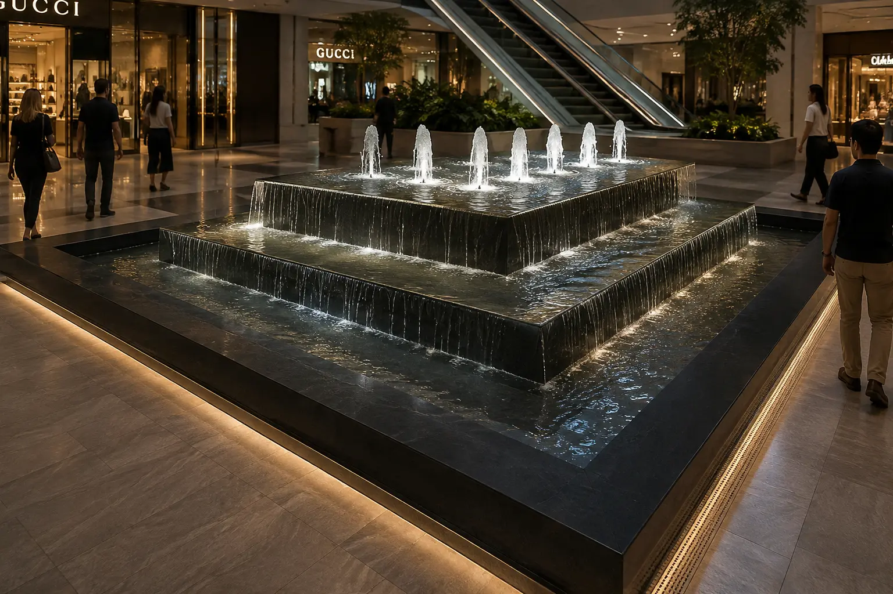
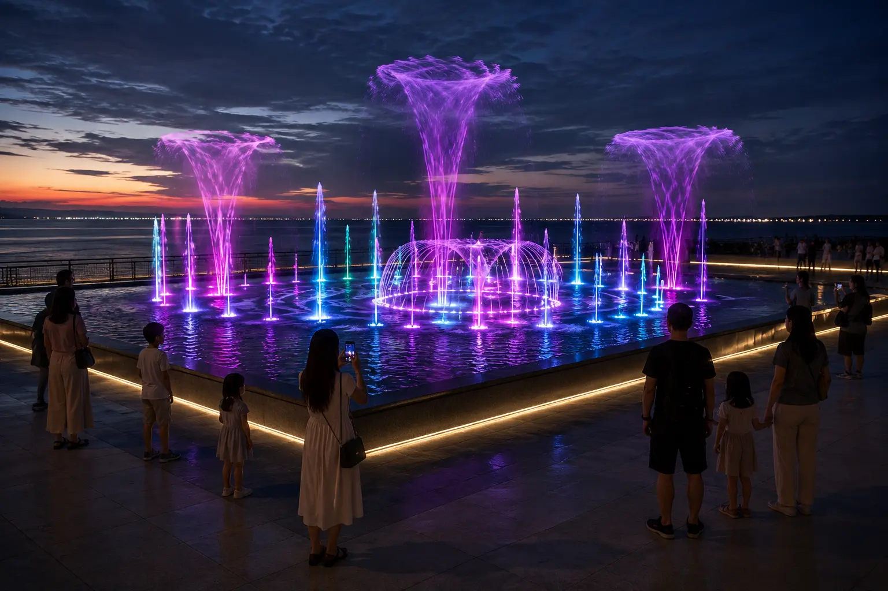
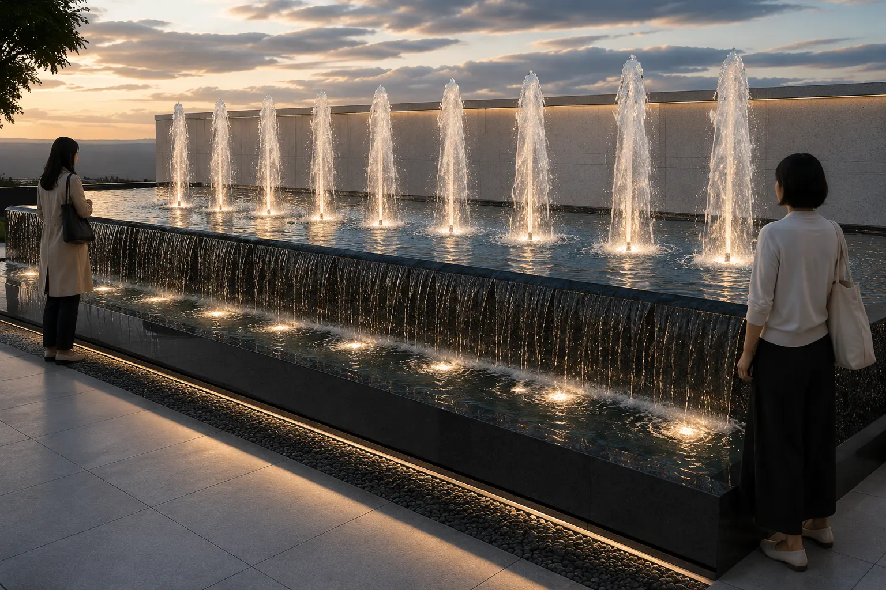
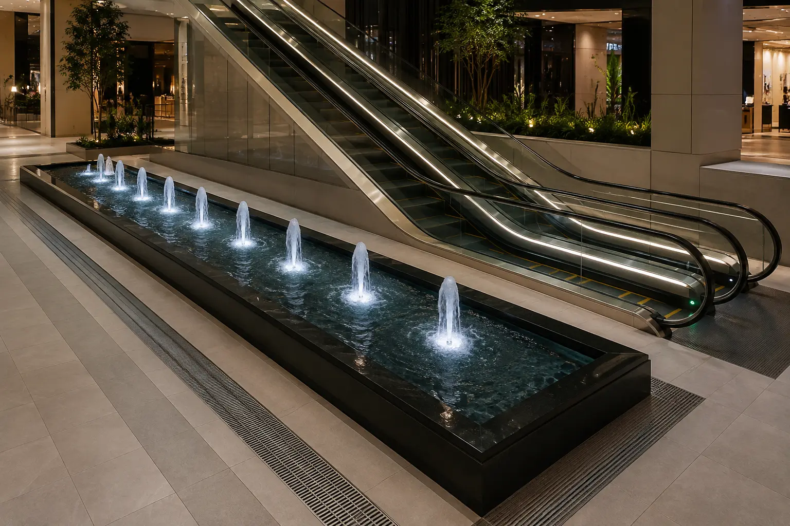

TURKEY · SHOPPING MALL WATER FEATURES
Konacik
Shopping Mall
Two moods of water: calm interior fountains supporting the retail environment and an outdoor musical fountain creating destination-scale spectacle.


DESIGN STRATEGY
Interior features were conceived as restorative pauses within the retail journey, using controlled water movement, neutral illumination and dark stone. Outside, the experience shifts deliberately toward choreography, saturated light and public gathering.
A QUIETER RHYTHM INSIDE
Water integrated into the retail journey.



PROJECT ROLE
Concept design covered fountain identities, water-effect selection, relative scale, day-to-night character and the relationship of each feature to mall circulation and public gathering areas.
THE PUBLIC FACADE